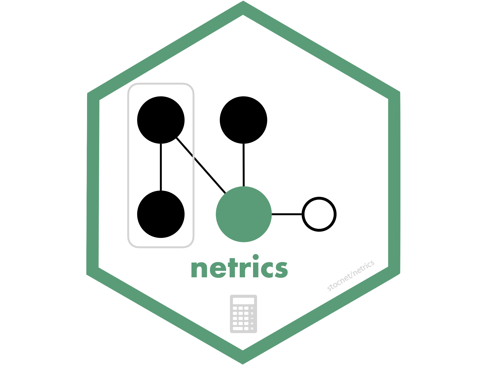

About the package
netrics is the analytic engine of the stocnet ecosystem. It provides many tools for marking, measuring, and identifying nodes’ motifs and memberships in many (if not most) types and kinds of networks. All functions operate on matrices, igraph, network, tidygraph, and mnet class objects, and recognise directed, weighted, multiplex, multimodal, signed, and other types of networks.
netrics depends on {manynet}, which handles working with different network classes, converting between them, and modifying them. Network-level logical tests (e.g. is_directed(), is_twomode()) remain in manynet, while node- and tie-level analytic marks (e.g. node_is_*(), tie_is_*()) are in netrics. For graph drawing, see {autograph}, and for further testing and modelling capabilities see {migraph}.
Marking
netrics includes four special groups of functions, each with their own pretty print() and plot() methods: marks, measures, motifs, and memberships. Marks are logical scalars or vectors, measures are numeric, memberships categorical, and motifs result in tabular outputs.
netrics’s node_is_*() and tie_is_*() functions offer fast logical tests of node- and tie-level properties. node_is_*() returns a logical vector the length of the number of nodes in the network, and tie_is_*() returns a logical vector the length of the number of ties in the network. Note that network-level tests such as is_directed() and is_twomode() are in manynet.
-
node_is_core(),node_is_cutpoint(),node_is_exposed(),node_is_fold(),node_is_independent(),node_is_infected(),node_is_isolate(),node_is_latent(),node_is_max(),node_is_mean(),node_is_mentor(),node_is_min(),node_is_neighbor(),node_is_pendant(),node_is_random(),node_is_recovered(),node_is_universal() -
tie_is_bridge(),tie_is_cyclical(),tie_is_feedback(),tie_is_imbalanced(),tie_is_loop(),tie_is_max(),tie_is_min(),tie_is_multiple(),tie_is_path(),tie_is_random(),tie_is_reciprocated(),tie_is_simmelian(),tie_is_transitive(),tie_is_triangular(),tie_is_triplet()
The *is_max() and *is_min() functions are used to identify the maximum or minimum, respectively, node or tie according to some measure (see below).
Measures
netrics’s *_by_*() functions offer numeric measures at the network, node, and tie level. These include:
-
net_by_adhesion(),net_by_assortativity(),net_by_balance(),net_by_betweenness(),net_by_change(),net_by_closeness(),net_by_cohesion(),net_by_components(),net_by_congruency(),net_by_connectedness(),net_by_core(),net_by_correlation(),net_by_degree(),net_by_density(),net_by_diameter(),net_by_diversity(),net_by_efficiency(),net_by_eigenvector(),net_by_equivalency(),net_by_factions(),net_by_harmonic(),net_by_heterophily(),net_by_homophily(),net_by_immunity(),net_by_indegree(),net_by_independence(),net_by_infection_complete(),net_by_infection_peak(),net_by_infection_total(),net_by_length(),net_by_modularity(),net_by_outdegree(),net_by_reach(),net_by_reciprocity(),net_by_recovery(),net_by_reproduction(),net_by_richclub(),net_by_richness(),net_by_scalefree(),net_by_smallworld(),net_by_spatial(),net_by_stability(),net_by_strength(),net_by_toughness(),net_by_transitivity(),net_by_transmissibility(),net_by_upperbound(),net_by_waves(),node_by_adoption_time(),node_by_alpha(),node_by_authority(),node_by_betweenness(),node_by_bridges(),node_by_brokering_activity(),node_by_brokering_exclusivity(),node_by_closeness(),node_by_constraint(),node_by_coreness(),node_by_deg(),node_by_degree(),node_by_distance(),node_by_diversity(),node_by_eccentricity(),node_by_efficiency(),node_by_effsize(),node_by_eigenvector(),node_by_equivalency(),node_by_exposure(),node_by_flow(),node_by_harmonic(),node_by_heterophily(),node_by_hierarchy(),node_by_homophily(),node_by_hub(),node_by_indegree(),node_by_induced(),node_by_information(),node_by_kcoreness(),node_by_leverage(),node_by_multidegree(),node_by_neighbours_degree(),node_by_outdegree(),node_by_pagerank(),node_by_posneg(),node_by_power(),node_by_randomwalk(),node_by_reach(),node_by_reciprocity(),node_by_recovery(),node_by_redundancy(),node_by_richness(),node_by_stress(),node_by_subgraph(),node_by_thresholds(),node_by_transitivity(),node_by_vitality(),tie_by_betweenness(),tie_by_closeness(),tie_by_cohesion(),tie_by_degree(),tie_by_eigenvector()
The measures are organised into several broad categories, including: Centrality, Cohesion, Hierarchy, Innovation (structural holes), Diversity (heterogeneity), Topology (features), and Diffusion. Each measure recognises whether the network is directed or undirected, weighted or unweighted, one-mode or two-mode, and returns normalized values wherever possible. We recommend you explore the list of functions to find out more.
Memberships
netrics‘s *_in_*() functions identify nodes’ membership in some grouping, such as a community or component. These functions always return a character vector, indicating e.g. that the first node is a member of group “A”, the second in group “B”, etc.
-
node_in_adopter(),node_in_automorphic(),node_in_betweenness(),node_in_brokering(),node_in_community(),node_in_component(),node_in_core(),node_in_eigen(),node_in_equivalence(),node_in_fluid(),node_in_greedy(),node_in_infomap(),node_in_leiden(),node_in_louvain(),node_in_optimal(),node_in_partition(),node_in_regular(),node_in_roulette(),node_in_spinglass(),node_in_strong(),node_in_structural(),node_in_walktrap(),node_in_weak()
For example node_in_brokering() returns the frequency of nodes’ participation in Gould-Fernandez brokerage roles for a one-mode network, and the Jasny-Lubell brokerage roles for a two-mode network.
These can be analysed alone, or used as a profile for establishing equivalence. netrics offers both HCA and CONCOR algorithms, as well as elbow, silhouette, and strict methods for k-cluster selection.

netrics also includes functions for establishing membership on other bases, such as typical community detection algorithms, as well as component and core-periphery partitioning algorithms.
Motifs
netrics‘s *_x_*() functions tabulate nodes’ and networks’ frequency in various motifs. These include:
Analysis
The functions in netrics are designed to answer a wide variety of analytic questions about networks. For example, you might want to know about:
-
Centrality:
net_by_betweenness(),net_by_closeness(),net_by_degree(),net_by_eigenvector(),net_by_indegree(),net_by_outdegree(),node_by_betweenness(),node_by_closeness(),node_by_degree(),node_by_eigenvector(),node_by_indegree(),node_by_multidegree(),node_by_neighbours_degree(),node_by_outdegree(),node_in_betweenness(),tie_by_betweenness(),tie_by_closeness(),tie_by_degree(),tie_by_eigenvector() -
Cohesion:
net_by_congruency(),net_by_density(),net_by_equivalency(),net_by_reciprocity(),net_by_transitivity(),node_by_equivalency(),node_by_reciprocity(),node_by_transitivity() -
Hierarchy:
net_by_connectedness(),net_by_efficiency(),net_by_reciprocity(),net_by_upperbound(),net_x_hierarchy(),node_by_efficiency(),node_by_hierarchy(),node_by_reciprocity() -
Innovation:
node_by_constraint(),node_by_effsize(),node_by_redundancy() -
Diversity:
net_by_assortativity(),net_by_diversity(),net_by_heterophily(),net_by_homophily(),net_by_richness(),node_by_diversity(),node_by_heterophily(),node_by_homophily(),node_by_richness() -
Topology:
net_by_balance(),net_by_core(),net_by_factions(),net_by_modularity(),net_by_richclub(),net_by_smallworld(),node_by_coreness(),node_by_kcoreness(),node_in_core(),node_is_core(),tie_is_imbalanced() -
Resilience:
net_by_adhesion(),net_by_cohesion(),node_by_bridges(),node_is_cutpoint(),tie_by_cohesion(),tie_is_bridge() -
Brokerage:
net_x_brokerage(),node_by_brokering_activity(),node_by_brokering_exclusivity(),node_in_brokering(),node_x_brokerage() -
Diffusion:
net_by_infection_complete(),net_by_infection_peak(),net_by_infection_total(),node_by_adoption_time(),node_by_exposure(),node_in_adopter(),node_is_exposed(),node_is_infected(),node_x_exposure()
Installation
Stable
The easiest way to install the latest stable version of netrics is via CRAN. Simply open the R console and enter:
install.packages('netrics')
library(netrics) will then load the package and make the functions contained within the package available.
Development
For the latest development version, for slightly earlier access to new features or for testing, you may wish to download and install the binaries from Github or install from source locally. The latest binary releases for all major OSes – Windows, Mac, and Linux – can be found here. Download the appropriate binary for your operating system, and install using an adapted version of the following commands:
- For Windows:
install.packages("~/Downloads/netrics_winOS.zip", repos = NULL) - For Mac:
install.packages("~/Downloads/netrics_macOS.tgz", repos = NULL) - For Unix:
install.packages("~/Downloads/netrics_linuxOS.tar.gz", repos = NULL)
To install from source the latest main version of netrics from Github, please install the remotes package from CRAN and then:
- For latest stable version:
remotes::install_github("stocnet/netrics") - For latest development version:
remotes::install_github("stocnet/netrics@develop")
Relationship to other packages
netrics is part of the stocnet ecosystem of R packages for network analysis. The packages are designed to be modular, with clear roles and dependencies:
-
{manynet}: The foundation package for working with network data. It handles network classes (matrices, igraph, network, tidygraph,mnet), coercion between them, modification, and network-level logical tests (is_*()functions). -
netrics: The analytic package containing all measures (
*_by_*()functions), memberships (*_in_*()functions), motifs (*_x_*()functions), and node- and tie-level marks (node_is_*(),tie_is_*()functions). netrics depends on manynet. -
{autograph}: The graph drawing package. autograph depends on both manynet (for network classes) and netrics (for analytic results to visualise), since it would typically be used with both. -
{migraph}: The modelling and testing package, building on both manynet and netrics.
Node- and tie-level marks such as node_is_cutpoint() and tie_is_bridge() are kept in netrics rather than manynet because they are analytic functions that identify structural positions in the network. Network-level property tests like is_directed() remain in manynet because they describe the type of data rather than an analytic result.
Funding details
Development on this package has been funded by the Swiss National Science Foundation (SNSF) Grant Number 188976: “Power and Networks and the Rate of Change in Institutional Complexes” (PANARCHIC).